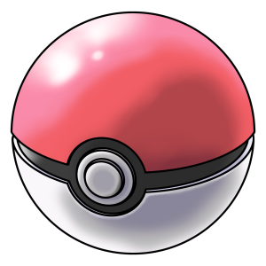
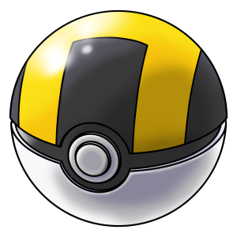
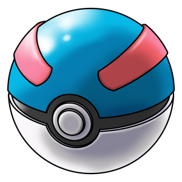

Pokébolas
Pokéball: Simples e distribuída em 5 da mesma, no início de sua jornada e sendo a internacionalmente mais conhecida de todas. A Pokébola é efetiva na captura de pokémons de níveis baixos. Uma péssima escolha para se atirar de primeira.Ultra Ball: Destacando-se pela vasta eficiência, que ás já citadas anteriormente. A Ultra Ball é usada para capturar qualquer espécie de Pokémon, pertencendo aos níveis baixos, médios e altos.
Great Ball: Sendo mais efetiva na captura de qualquer espécie de Pokémon. A Greatball geralmente é usada para a captura de Pokémons de níveis intermediários e baixos.